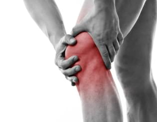
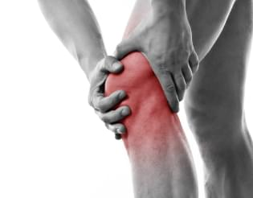

Откуда берется утомляемость и боль в стопе, колене, пояснице?
 

Причинами такой мышечной усталости могут быть неправильная походка, нарушение осанки, лишний вес.
Мышечно-связочный аппарат стопы не в состоянии выдерживать нагрузку, и поэтому вы чувствуете дискомфорт,
тяжесть в ногах и даже ноющую боль.
Дискомфорт – далеко не единственное последствие. Дальше развивается деформация стопы: растет косточка
большого пальца, смещается пяточная кость, уплощаются своды стопы. В конце концов, изменения затрагивают
коленный, тазобедренный суставы и поясничный отдел позвоночника – они также чувствительны к изменениям в
стопе. Эти мучения и дискомфорт дают сигнал - стопа нуждается в поддержке!